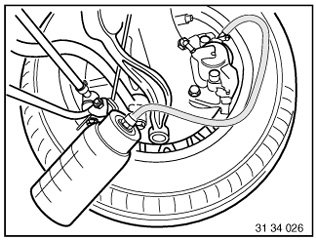
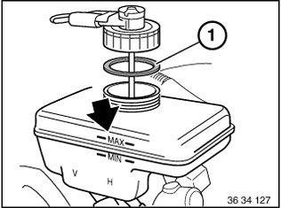

34 00 050 Bleeding Brake System With DSC
34 00 050 Bleeding brake system with DSCNote:
Read and comply with General Information.
When replacing or repairing, observe the filling and bleeding instructions for the following parts:
- Tandem brake master cylinder
- Hydraulic unit
- Components and connecting lines which are fitted between these assemblies.
Connect bleeder unit with max. 2 bar filling pressure.
A second person is needed to help carry out this work.
Unclip retaining tabs (1).
Pull cover (3) out of guide (2) and remove.


Connect DIS.
Select path: Service functions - Chassis/Suspension - Slip control systems - Bleeding procedure.
Connect brake fluid changer to expansion tank and switch on.
Important!
Check relevant Operating Instructions for each device.
Charging pressure should not exceed 2 bar.
Always use BMW-approved brake fluids, refer to BMW Operating Fluids.
Fully rinse the brake system
Connect bleeder hose with collecting tray to bleeder valve on rear right brake caliper.
Open bleeder valve and purge until clear, bubble-free brake fluid emerges.
Close bleed valve.
Follow same procedure on rear left, front right and front left wheel brake.


Bleeding rear-axle brake circuit
Connect bleeder hose with collecting tray to bleeder valve on rear right brake caliper.
Close bleeder valve.
Run bleeding routine with DIS with bleeder valve open.
After completing routine, press brake pedal 5 times to floor; clear and bubble-free brake fluid must flow out.
Close bleed valve.
Repeat procedure at rear left.

Bleeding front-axle brake circuit
Connect bleeder hose with collecting tray to bleeder valve on front right brake caliper.
Close bleeder valve.
Run bleeding routine with DIS with bleeder valve open.
After completing routine, press brake pedal 5 times to floor, clear and bubble-free brake fluid must flow out.
Close bleed valve.
Repeat procedure at front left.

Switch off brake fluid changer and remove from expansion tank.
Check brake fluid level.
Close expansion tank.
Note:
Pay attention to rubber seal (1) in sealing cap.